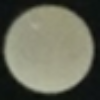

<link rel="import" href="../polymer/polymer.html">
<script src="../webduino-js/dist/webduino-base.min.js"></script>

<dom-module id="wa-max7219">
    <template>
        <style>
        img {
            width: 24px;
        }
        </style>
        </img>
        </img>
    </template>
</dom-module>
<script>
(function() {
    Polymer({
        is: 'wa-max7219',
        properties: {},
        created: function() {
            var board = new webduino.WebArduino('4APl');
            board.on('ready', function ready() {
                console.log("board ready !");
                board.send([0xf0, 0x04, 0x08, 0x00, 6, 7, 8, 0xf7]);
                board.send([0xf0, 0x04, 0x08, 0x02, 6, 7, 8, 0xf7]);
                board.send([
                    0xf0, 0x04, 0x08, 01,
                    255, 255, 255, 255, 255, 255, 255, 255, 0xf7
                ]);
                board.send([0xf0, 0x04, 0x08, 02, 0xf7]);
            });
        }
    });
})();
</script>